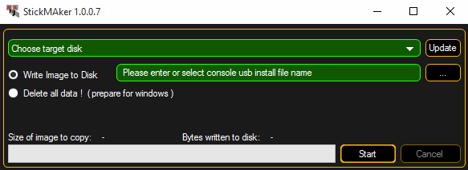

This topic describes how to format a USB stick for Linux. This is necessary for a later update via boot menu or a factory reset.
Requirements:
An empty USB stick
A software version .imgz file (download the latest software version at www.malighting.com)
MA stickMAker (download the MA stickMAker at www.malighting.com under Utilities)
To format a USB stick for a later grandMA2 update:
Install the MA stickMAker by double click at the StickMaker-x.x.x.x.exe.
You will be guided through the installation process.
Insert an empty USB stick in your computer.
Open the MA stickMAker by a right mouse click, and then click at Run as administrator.
The MA stickMAker opens.

MA stickMAker
Select the USB drive in the green target field, then click at the three dots and select the gMA2Console_v*.imgz file. Click Start.
The stick will be formatted to a Linux stick and the image will be written to the stick. This process takes about three minutes. When the copy operation is succeeded, a pop-up opens.
Click Ok.
Remove the USB stick from the computer.
The USB stick is formatted into a Linux USB stick and ready for a grandMA2 update or a factory reset.